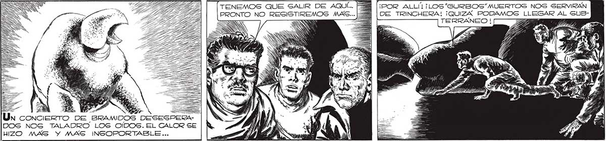

224 * PERO... ¿QUÉ LE BASA AL MAYOR? 2 NO, JUAN! ¡NO TE ASGOMES! ¡NOS ESTAN IRRADIANDO CON LANZARRAYOS ! Uns oa oe CALOR ABRASADOR NOS PASABA YA POR ENCIMA. ATERRADO COMPRENDI... ¡POR ALLÍ! ¡LOS "SURBOS"“MUERTOS NOS SERVIRAN DE TRINCHERA! ¡QUIZA PODAMOS TERRANEO | Za TENEMOS QUE SALIR DE AQUÍ... F PRONTO NO RESISTIREMOS MAC... A == BES 47 SO A + 2 1 NN Un concie E BRAMIDOS DESESPERADOS NOG TALADRO LOS OÍDOS. EL CALOR SE HIZO MAS Y MAS INSOPORTABLE...
